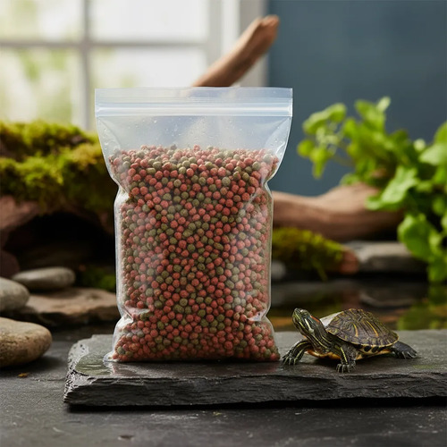
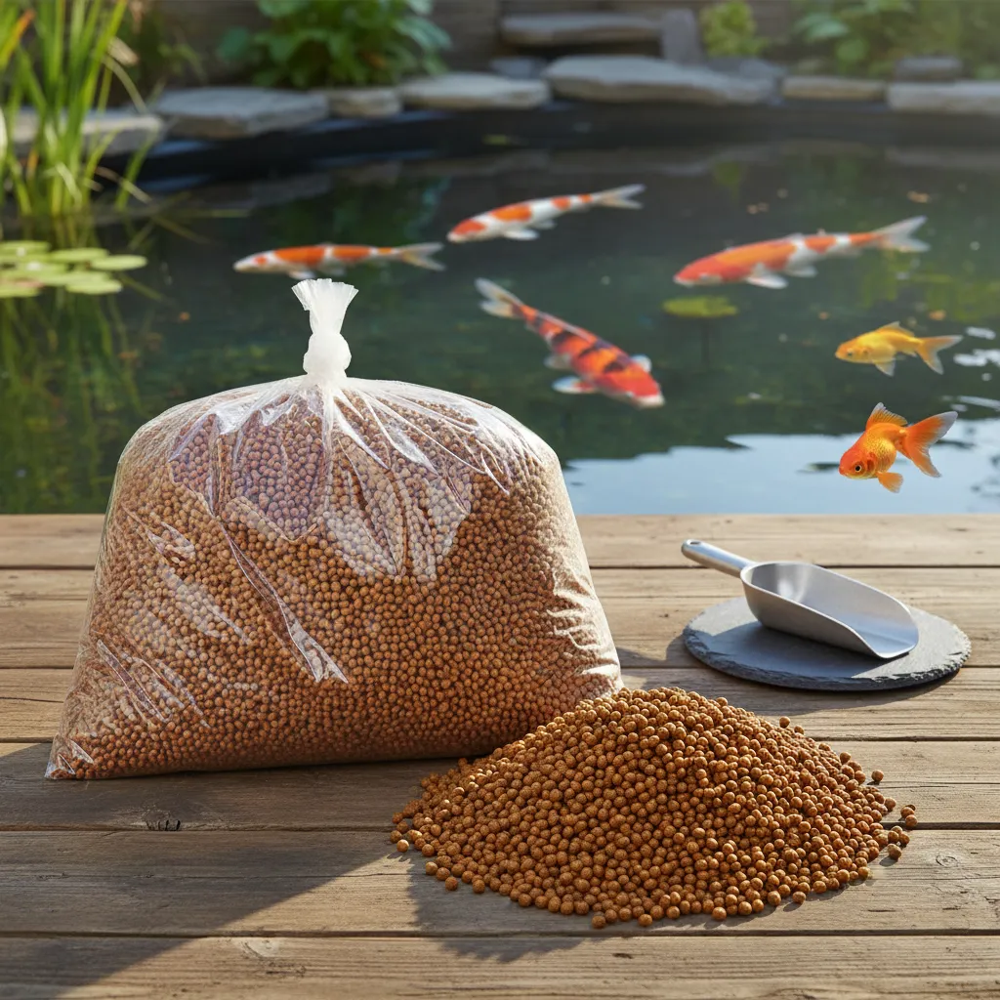

Guias de Alimentação para Peixes Ornamentais, Tartarugas e Répteis
A Mix Campo reúne conteúdos completos sobre alimentação animal para ajudar na escolha da ração ideal para diversas espécies de peixes ornamentais, tartarugas aquáticas, jabutis, iguanas e outros répteis.

Ração para Tartaruga Terrestre, Jabuti e Iguana

Ração para Tartaruga Aquática

Ração Pequena para Carpas e Kinguios CK1

Ração Média para Carpas e Kinguios CK2

Ração de Meia Água para Peixes Ornamentais Onívoros

Ração de Meia Água para Peixes Ornamentais Carnívoros

Ração de Fundo para Peixes Carnívoros

Ração de Fundo para Cascudos e Peixes Onívoros
Mix Campo, ração Mix Campo, produtos Mix Campo, alimentação para peixes Mix Campo